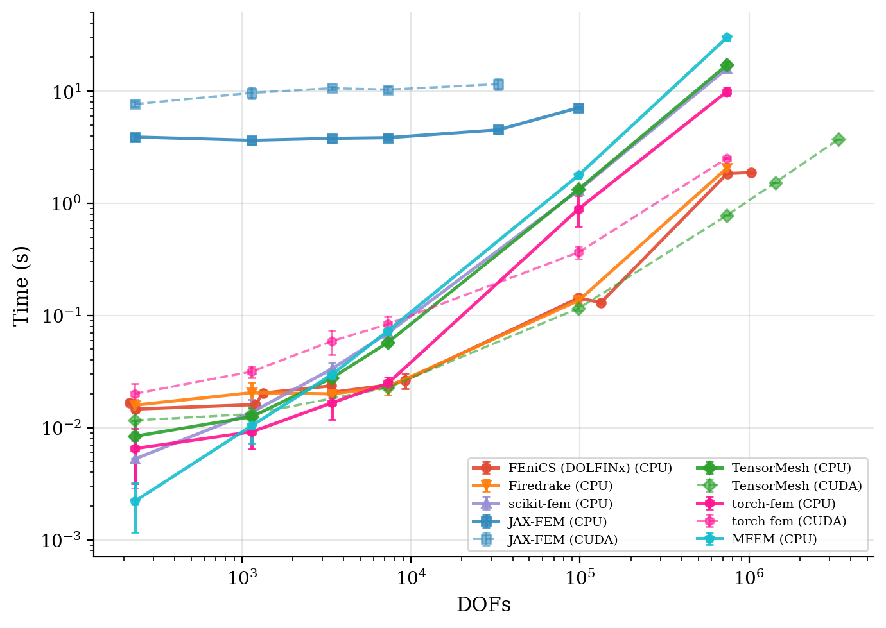
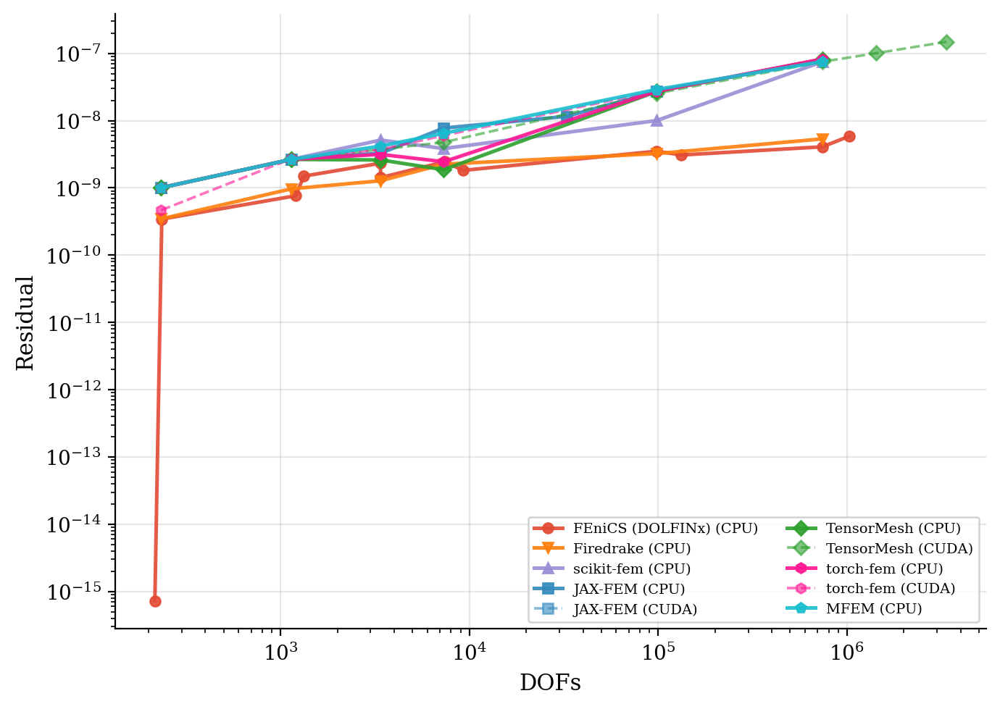
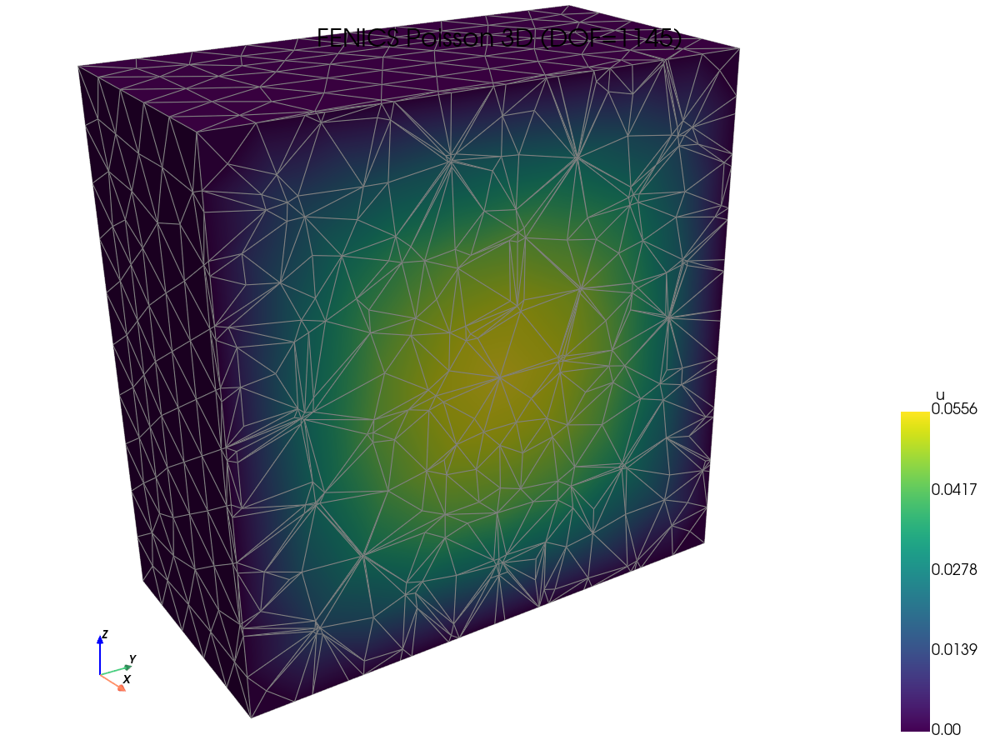
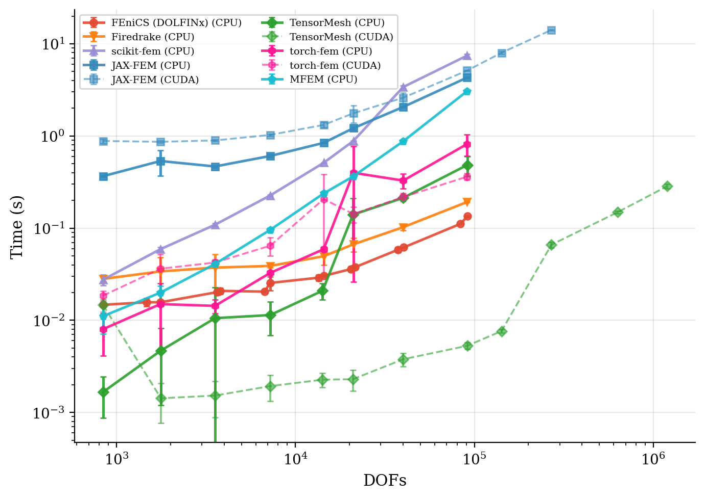
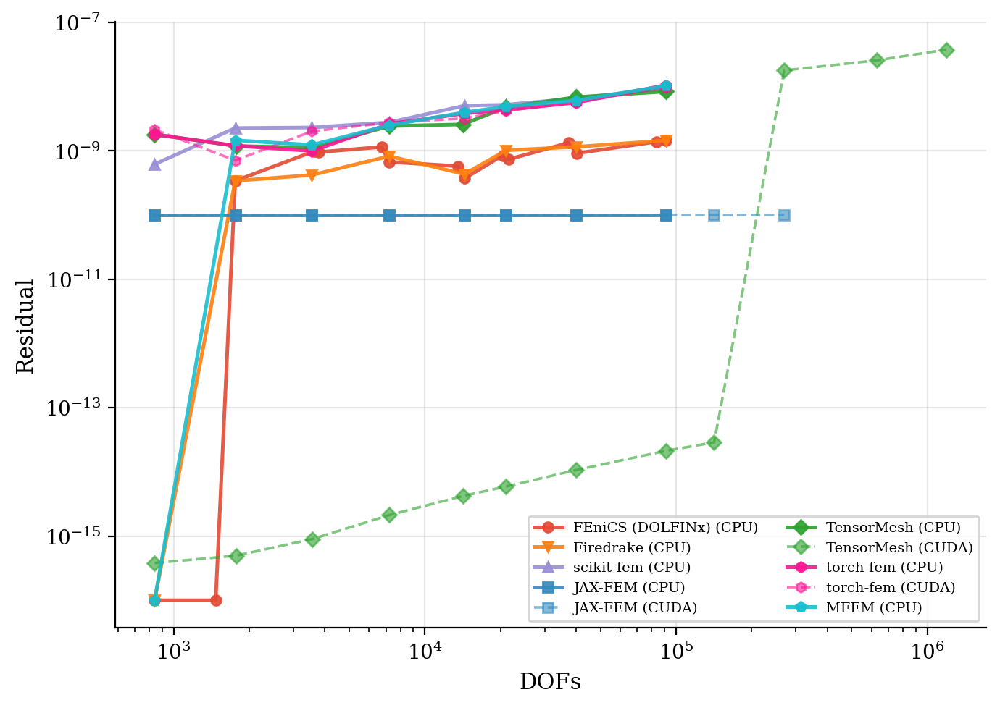
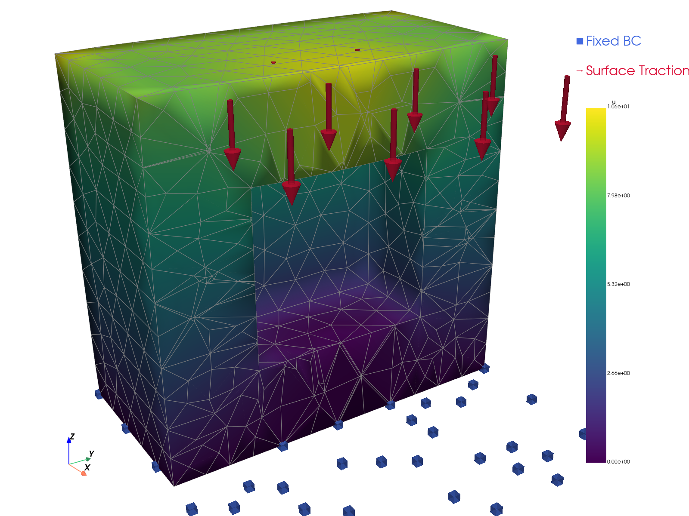
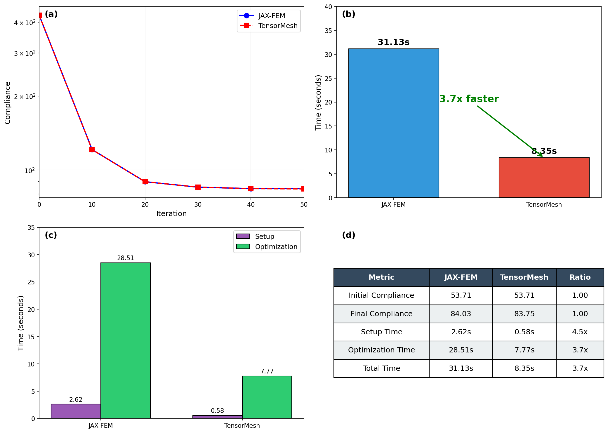
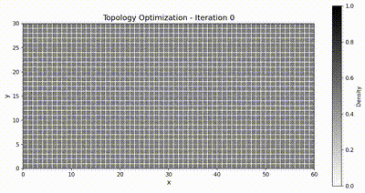
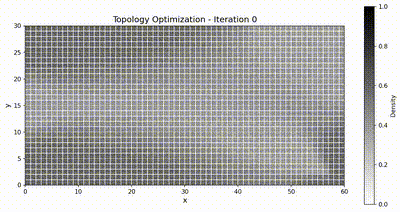

基准测试¶
本页面在两个正向问题（三维泊松方程和三维线弹性）以及一个反向问题（柔度最小化拓扑优化）上，将 TensorMesh 与若干成熟的有限元方法框架进行对比。
所有基准测试脚本和参考数据存放在一个独立的仓库中：camlab-ethz/tensormesh-bench。
测试环境¶
CPU |
来自双路 AMD EPYC 9005 系列（Zen 5 "Turin"）节点的 8 个核心 |
GPU |
1× NVIDIA RTX PRO 6000 Blackwell Server Edition |
内存 |
64 GB DDR5 ECC（8 核 × 8 GB） |
操作系统 |
Ubuntu 22.04 LTS (x86_64) |
对比的框架¶
框架 |
后端 |
CPU |
CUDA |
备注 |
|---|---|---|---|---|
C++/Python |
✅ |
❌ |
8 进程 MPI |
|
Python/PETSc |
✅ |
❌ |
8 进程 MPI |
|
C++ |
✅ |
❌ |
8 进程 MPI |
|
Python |
✅ |
❌ |
轻量级，单进程 |
|
JAX |
✅ |
✅ |
可微 |
|
PyTorch |
✅ |
✅ |
可微 |
|
TensorMesh |
PyTorch |
✅ |
✅ |
可微 |
求解器配置¶
为保证对比的可控性，所有框架均使用相同的迭代线性求解器和停止准则：
参数 |
取值 |
|---|---|
迭代方法 |
BiCGSTAB |
预条件子 |
Jacobi（对角缩放） |
相对容差 |
\(10^{-10}\) |
绝对容差 |
\(10^{-10}\) |
最大迭代次数 |
10,000 |
备注
唯一的例外是 torch-fem 的 CUDA 路径，它使用共轭梯度法（CG）而非 BiCGSTAB —— 因为其 CUDA 后端未提供 BiCGSTAB 实现。
正向问题¶
三维泊松方程¶
在单位立方体 \(\Omega = [0,1]^3\) 上，我们求解
其中源项为常数 \(f = 1\)，并在每个面上施加齐次狄利克雷边界条件。
求解时间与残差收敛性。 图中以墙钟时间对问题规模作图；残差历史曲线表明每个框架都达到了相同的目标容差。
求解时间 |
残差收敛性 |
 |
 |
{kind=link}
{kind=link}
解的可视化。 抽查每个框架是否产生相同的场 —— 在查看速度数据之前，这是一项有用的合理性检查。
FEniCS (DOLFINx) |
JAX-FEM |
scikit-fem |
TensorMesh |
 |
{kind=link}
{kind=link}
{kind=link}
{kind=link}
三维线弹性¶
我们求解各向同性线弹性体的静力平衡问题：
其中 \(\mathbf{u} : \Omega \to \mathbb{R}^3\) 为位移，柯西应力满足胡克定律
我们取杨氏模量 \(E = 1\)、泊松比 \(\nu = 0.3\)，由此得到
施加常数体力 \(\mathbf{f} = (1,1,1)^\top\)。为引入几何复杂度，我们采用空心立方体区域
求解时间与残差收敛性。
求解时间 |
残差收敛性 |
 |
 |
{kind=link}
{kind=link}
解的可视化。
FEniCS (DOLFINx) |
JAX-FEM |
scikit-fem |
TensorMesh |
 |

|

|

|
{kind=link}
反问题：拓扑优化¶
反问题基准测试在一个经典的拓扑优化任务上检验 TensorMesh 的可微性：使用带惩罚的各向同性固体材料法（SIMP）对二维悬臂梁进行柔度最小化。我们将其与 JAX-FEM 对比，后者是上述列表中唯一支持贯穿整个有限元方法流程的端到端自动微分的框架。
问题设置¶
计算区域为矩形 \(\Omega = [0, L_x] \times [0, L_y]\)，其中 \(L_x = 60\)、\(L_y = 30\)（无量纲），离散为 \(60 \times 30\) 个双线性四边形（QUAD4）单元 —— 共 1,891 个节点和 1,800 个单元。在左边界施加齐次狄利克雷条件，
并在右边界的下部施加分布牵引力，

单元刚度由 SIMP 插值参数化
其中 \(\rho \in [\rho_{\min}, 1]\) 是逐单元密度（设计变量），\(p = 3\) 对中间密度进行惩罚，\(E_{\max} = 70{,}000\) MPa 为实体刚度，\(E_{\min} = 70\) MPa 用以保持刚度矩阵非奇异。泊松比为 \(\nu = 0.3\)。
该优化在体积约束下最小化结构柔度：
目标体积分数为 \(\bar{v} = 0.5\)，\(\rho_{\min} = 10^{-3}\)。我们采用移动渐近线法（MMA），移动限制为 \(\Delta\rho_{\max} = 0.1\)，并使用半径为 \(r_{\min} = 1.5\,h\)（其中 \(h\) 为单元尺寸）的灵敏度过滤器以抑制棋盘格图案。优化共运行 51 次迭代。
通过自动微分计算灵敏度¶
SIMP 的经典伴随法灵敏度具有如下闭式表达
其中 \(\mathbf{K}_0^e\) 是单位杨氏模量下的单元刚度。在 TensorMesh 中，这一梯度并非手动实现 —— 而是通过 PyTorch 的反向模式 autograd 对可微的装配和稀疏求解进行反向传播得到。上述闭式表达仅作参考，并用于与 autograd 输出进行一致性检查。
最终设计对比¶
两个框架都收敛到同样经典的桁架状拓扑，而得益于装配与求解全程驻留在 GPU 上，TensorMesh 的端到端运行速度明显更快。
{kind=link}

优化动画¶
JAX-FEM |
TensorMesh |
 |
 |
{kind=link}
{kind=link}